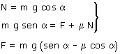

b)
 |
Las líneas verdes y rojas son perpendiculares entre sí y delimitan ángulos iguales |
Se puede mantener el bloque en reposo aunque la fuerza F sea menor que mg·sen α porque el rozamiento ayuda a sujetarlo El valor mínimo de F corresponderá al caso en que la fuerza de roza-miento sea máxima (μN) |
|
 |
 |
|
Obviamente hay
valores de μ para los cuales la fuerza necesaria para sujetar
el cuerpo es negativa, lo cual indica una situación imposible
¿por qué? |